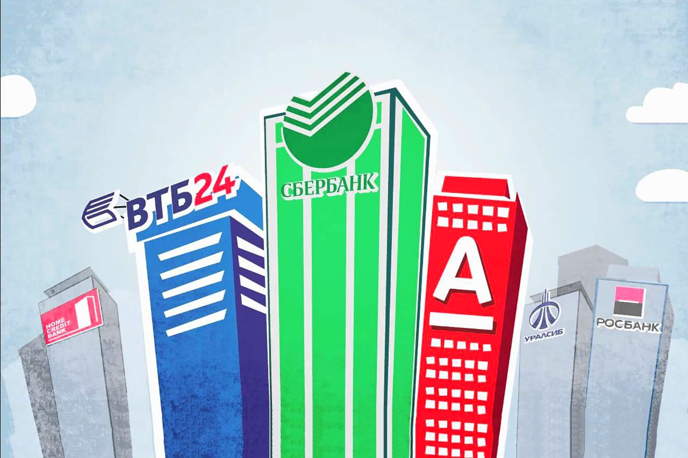

Банк — финансовая организация, которая привлекает денежные средства на депозиты у тех, кто имеет сбережения, и выдает деньги в виде кредитов тем, кому они нужны для развития бизнеса или личных нужд.
Банковский вклад — сумма денег, переданная лицом кредитному учреждению с целью получить доход в виде процентов, образующихся в ходе финансовых операций с вкладом.

Вклады — удобная и практичная банковская услуга, позволяющая хранить средства на специальных счетах.